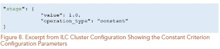
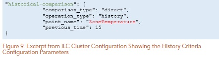

ILC Web application: User guide¶
Introduction¶
The ILC configuration tool is used to create an ILC configuration store for use in VOLTTRON. The configuration store content being created will be shown in the viewing pane on the right side of the application.
ILC APPLICATION CONFIGURATION¶
The ILC application behavior is controlled through these configuration Pages:
The main configuration page
The device/criteria configuration page
The pairwise configuration page
The criteria configuration page
The control configuration page
The following sections describe what each configuration file controls and the parameters defined within these configuration files.
Importing the Master Driver Configuration Store¶
At the initial homepage, the user will be prompted to upload the Master Driver Configuration Store file. Values within the Master Driver Configuration Store will be parsed to provide options for Campus, Buidling, Device and Points throughout the application.

Once the user has selected the Master Driver Configuration Store, this homepage will not appear again. However, if the user needs to upload a different Master Driver Configuration Store at any point, this option can be accessed via the Menu icon in the top left of the application.
Warning
Uploading a new Master Driver Configuration Store will remove all current data in the application.
Main Configuration¶
The main configuration store contains building level configuration parameters.
The following list describes each of the configuration parameters in the main configuration store.

This list will go over each of the input options located in the main configuration page: - Campus - Building - Power_meter - Device - Agent ID - Demand Limit - Control Time - Curtailment Confirm - Curtailment Break - Average Building Power Window
- Campus
The campus name as published by the VOLTTRON platform.driver service.
- Building
The building name as published by the VOLTTRON platform.driver service.
- Power Meter
contains information to identify the power meter data published by the platform.driver. Expand the Power Meter dropdown to select the device, point, and define the Demand Formula using the calculator interface

- Agent ID
The ILC instance (running application) name on the VOLTTRON platform.
- Demand Limit
The ILC application manages devices (curtail) in an attempt to keep the average whole building power below this kilowatt value. The average time is determined by the average_building_power_window parameter.
Demand limit will take an input as a float.
Note
ILC will manage controllable loads to maintain building demand at this value.
- Control Time
The amount of time (minutes) the ILC application holds curtailment of devices once the building goal is met. During this period if the average WholeBuildingPower value increases above the goal the timer resets and the ILC application will attempt to curtail additional available devices. If all devices have been curtailed and the WholeBuildingPower is still above the goal the timer is not reset.
Note
After ILC control brings the building demand to the demand target, I:C will hold control of devices for this amount of time, then the ILC will begin to release devices.
- Curtailment Confirm
Delay time (minutes) after curtailment actions to confirm that building demand goal has been met. If the building goal has not been met, additional curtailment action(s) will be taken if possible.
- Curtailment Break
The time (minutes) after the completion of curtailment actions where no further curtailment actions are taken. Completion of curtailment actions happens after the curtailment_time timer elapses (i.e., the average WholeBuildingPower goals was met and maintained for the curtailment_time or all devices were curtailed and the curtailment_time timer elapsed).
- Average Building Power Window
The average building power is calculated using a moving window. This parameter configures the length (minutes) of that window.
- Stagger Release/ Off Time
The Stagger Release algorithm is in testing to alleviate the potential rebound effect caused by returning devices to normal operations.
Both buttons can be checked or unchecked:
Calculator¶
The calculator is a tool that is used throughout the configuration tool to create an operation string and arrays of operation arguments. There are variations on options based upon locations within the application.

The calculator pad buttons when pressed will populate the operation string above. Once the save operation button is pressed, the values in the ILC Configuration Store will be updated.
- Operation
An operation is a string representation of a mathematical formula.
Note
You cannot directly enter characters into the operation string, it has to be populated by using the calculator pad buttons.
- Operation Argument
Operation Arguments are points derived from the selected device. To enter an operation argument into the operation, select an operation argument from the dropdown input and press the +ADD button to the right of the dropdown input.
- Clear formula
The Clear formula button on the calculator will clear the formula currently in use.
- Save Operation
The Save Operation button will save the formula that is currently being used to the ILC Configuration Store. If the Operation is not saved, the ILC Configuration Store will not be updated.

Clusters¶
A cluster consists of a group of devices with the same criterion. To add a cluster, click on the +Add Cluster button in the Left Panel. Creating a cluster will populate a dropdown within the left side panel where the user will gain access to the Pairwise Configuration, Criteria Configuration, Control configuration.
- Cluster Name
The referenced name of the cluster.
- Cluster Type
The system type of the cluster.
- Cluster Priority
Weighting factor assigned to this cluster. The sum of these weighting factors for all clusters will equal 1.0.
Note
The cluster priority section needs to be set to 1 if only one cluster is present. When there are multiple clusters, existing cluster priorities can be updated by changing the priority value for the existing cluster and pressing the Save New Priority button.
- Cluster Editing
The cluster name, type and priority can be revised after the creation of the cluster by navigating to the Edit Clusters page, a link to which is found in the left side panel.
Pairwise Configuration¶
In the left side panel tree, there will be a Cluster dropdown created upon adding a new cluster. After expanding a Cluster tree, the Pairwise Criteria page can be reached.

- Criteria
The creation, deletion and ordering of cluster criteria is handled here. Adding a criteria is done by pressing the +Add Criteria* button. Deletion of a cluster criteria is done by pressing the X on the right side of the criteria. Order of the criteria is changed by dragging and dropping criteria.
Expanding the criteria dropdowns below will expose sliding scales to set comparison curtail values. Inside each dropdown the Red line indicates a lesser curtail value, which is the reciprocal of the value shown i.e. 2 will be 1/2 and 3 will be 1/3. The Blue line a greater curtail value.

Warning
When reordering, adding or deleting criteria, criteria curtail values will reset back to the default value of 1.
Criteria Configuration¶
Criteria configuration is the second dropdown inside the created Cluster. It will be listed as shown:

Criteria configuration takes in stored values from pairwise configuration and reflects the device topic criteria and their order. once this option is selected, you will see an button appear in the center of the application:

Expand the device topic to view criteria configuration options:

Once an option within the drop down is chosen, there will be an input to choose operation type. The different operations types are formula, status, mapper, constant, and history.
Any number of relevant criteria can be used to prioritize loads for curtailment to manage consumption (e.g., electricity or natural gas). The ILC application supports five types of configurable criteria which include the following:

- Formula
Formula allows a user to declare mathematical formulas that are evaluated using current device measurements(data from the device are published by the VOLTTRON platform.driver service).

operation : String representation of a mathematical formula. This mathematical formula is evaluated to return a numeric value.
operation_args : List of point names from the device used to evaluate the mathematical formula in the operation parameter. The values associated with each point are updated when new device data are published by the platform.driver.
Status
The status criterion reads a point (Boolean or enumeration) on the device and returns either an on_value or an off_value depending on whether the current status of the point is True (enumeration value of 1) or False(enumeration value of 0), respectively. The following list contains the status criterion configuration parameters:
point_name : The point on the device that is evaluated. This device point should be a Boolean or an enumeration with a value of 0 or 1.
on_value : The numeric value returned by the criterion if the point on the device indicates a True or enumeration value of 1.
off_value : The numeric value returned by the criterion if the point on the device indicates a False or enumeration value of 0. Figure 6 shows an example of a status criterion configured for a heat pump. The criterion name, rated-power, should match the name for the same criterion used in the pairwise comparison configuration file.

- Mapper
The mapper criterion allows a user to categorize loads and assign values to the categories. For example, room type can be used to set the importance of the rooms (heating or cooling of the room constitutes the load) for curtailment of power consumption. Rooms assigned higher numerical values are regarded as less important (more likely to be curtailed first) than rooms assigned lower numerical values. Users set their own priority depending on the importance of the room (1: most important and 7: less important). Table 2 shows an example of AHP priority based on room type.


- Mapper Editor
At the top of the Criteria Configuration page, there is a dropdown to edit map keys and dist names. ADD TO THIS.
The following list contains the mapper criterion configuration parameters: - Map Key – The category assigned to the device.
Figure 7 shows an example of a mapper criterion configured for a heat pump. The criterion name, room-type, should match the name for the same criterion used in the pairwise comparison configuration file.
dict_name : The dictionary name in the main ILC configuration file that contains the key (category) and value assigned to that category.

Constant

The constant criterion returns a constant value for inclusion in the AHP. The following list contains the constant criterion configuration parameters:
value : The value returned by this criterion for inclusion in the AHP.
Figure 8 shows a constant criterion example, configured for a heat pump. The criterion name, stage, will match the name for the same criterion used in the pairwise comparison configuration file.
History

The history criterion evaluates the rate of change of a point on the device to return a numeric value. The following list contains the history criterion configuration parameters:
Point Name : The point on the device that is evaluated.
Comparison Type : This configuration parameter can be configured to be direct or inverse. A direct comparison returns the value of the point at the current time minus the value of the point at some time in the past (configured as previous_time). An inverse comparison returns unity divided by the value of the point at the current time minus the value of the point at some time in the past (configured as previous_time).
Previous Time : Time in minutes in the past to compare to current value of the point on the device.
Minimum:
Maximum:
The figure below shows an example of a history criterion configured for a heat pump. The criterion name, historical-comparison, should match the name for the same criterion used in the pairwise comparison configuration file.
Control Configuration¶
The Control Configuration page can be accessed under the Cluster dropdown menu in the left side bar.

The once navigated to the page, the list of device topics determined in the criteria configuration will be shown:

Upon expansion of the device topic dropdown, the Curtail Device Status operation and Curtailment Settings forms will be available.

- Curtail Device Status
This section allows the user to enter in an operation equation using the Calculator component.
Note
Please refer to the Calculator Section of this user guide for instructions on calculator use.
- Curtailment Setting
Under Curtailment Setting, the user will select a Point
Note
The point on the device (i.e., HP1) that is commanded to achieve the load reduction.
There will be a dropdown list that will show as you select point.
Control Method : The options for Control Methods are offset, value and equation.
Offset: If offset parameter is chosen, then the current value of the point on the device plus the offset is commanded to the point on the device to achieve the desired load reduction.


Value : *The value the point is commanded to, in order to achieve the load reduction.
Equation : equation allows operation string creation from the calculator. Reference the Calculator section for further instructions on calculator usage.
- Load :
The last item in the curtailment settings section is the load determination. The type of load values are Equation, which will prompt for values using the Calculator feature, and Float, enabling the user to enter a numerical float value. Toggle between the options by pressing the corresponding radio button.
- Augment :
At the bottom of the device topic section there is a button to ADD AUGMENT. By default, this will copy values currently entered for the curtail section into a duplicate Augment section for customization. The Augment section can be removed at any time by pressing the REMOVE AUGMENT button.
Settings¶
Dark Mode : There is an option for this document to be used in dark mode. Click the Contrast icon on the top right corner of the page to toggle this option.